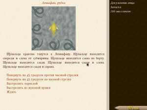

Пробуждение - это текстовая игра в жанре приключение, позволяющая вам побыть в роли Дэвида Дрейка.
Несколько лет назад, когда Дэвиду было 10 лет, его отец, Уильям Дрейк, владелец транспортной компании Вестхейвен Трансоушен, пропал при невыясненных обстоятельствах вместе с другими руководителями компании.
После исчезновения отца Дэвид жил в Вашингтоне с матерью. Он пошел по стопам отца и выучился на инженера-кораблестроителя. Несколько дней назад в доме, где он жил, был обнаружен тайник, хранящий секретные документы отца - карты, указывающие, по-видимому, на какие-то тайники Уильяма и записка с адресом и именем.
Одержимый идеей узнать больше Дэвид отправляется в Лондон...
В процессе игры вам предстоит разгадать тайну исчезновения Уильяма; познакомиться с жителями Атлантиды - автономной подводной станции, построенной Уильямом; встретить расу подводных жителей - навьяров; разгадать древние тайны навьяров и поучаствовать в осуществлении древнего пророчества.
Советы
[*]Каждый ваш выбор может иметь значение, всегда думайте прежде чем что-либо сказать или сделать. Внимательно читайте тексты -- игра дает достаточно информации, чтобы понять, как поступить правильно.
[*]Будьте готовы запоминать или записывать полученную в игре информацию -- она понадобится вам при прохождении.
[*]Будьте готовы запоминать или зарисовывать карты лабиринтов(если вы не используете руководство). Все лабиринты располагаются на квадратной сетке, однако доступные направления отличаются от лабиринта к лабиринта.
[*]Если игра не окончена, значит не все потеряно. В игре нет тупиковых ситуаций(только если это не баг). Если игра не говорит вам «вы проиграли», значит вы можете пройти ее до конца и увидеть последствия ваших действий. Исключение: Если вы потратите все деньги в прологе, то вам придется начать игру заново.
[*]Советуйтесь с экипажем. Людям и навьярам на борту Левиафана почти всегда есть что сказать.
